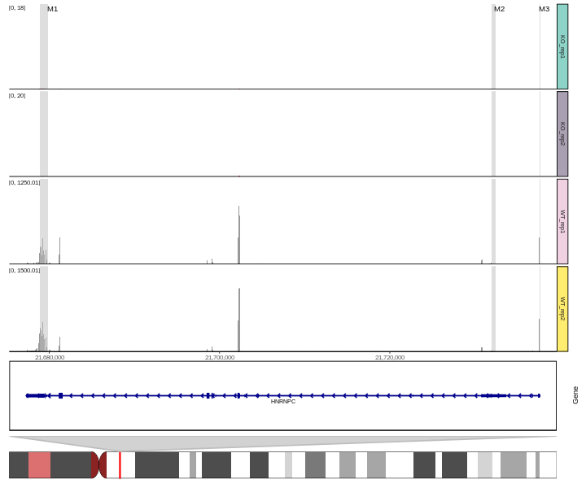
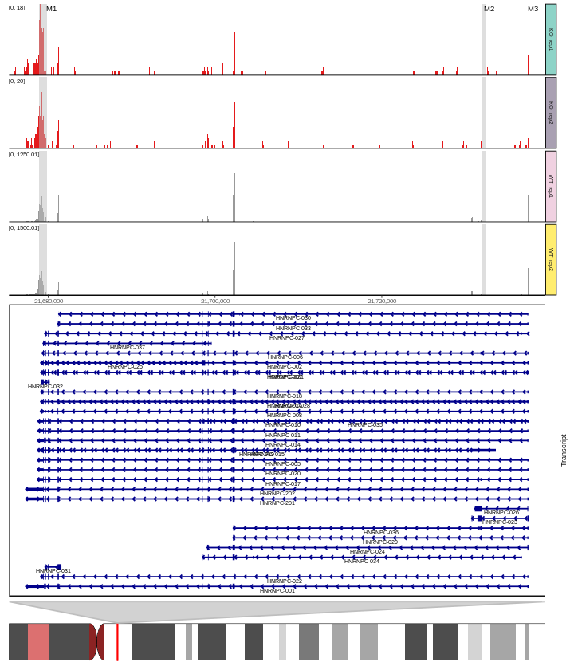
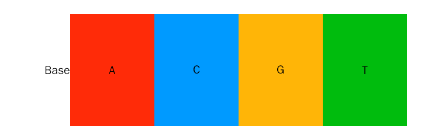
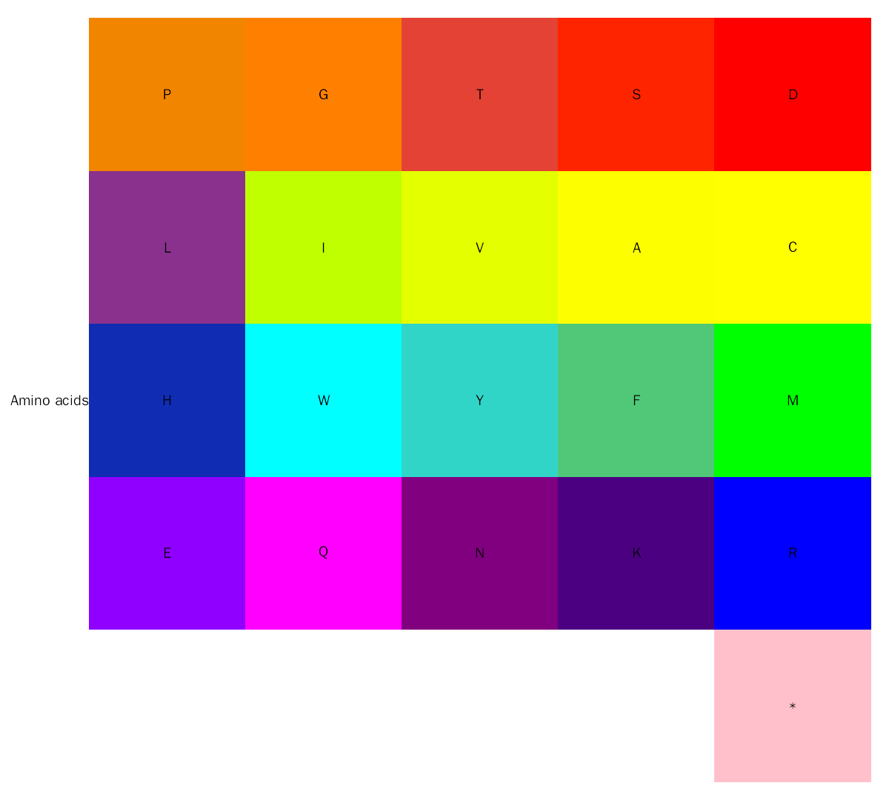
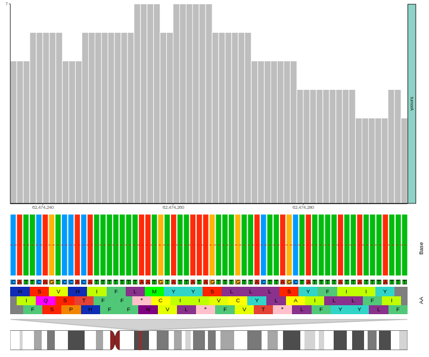

ggcoverage User Guide
Yabing Song
School of Life Sciences, Tsinghua Universitysongyb18@mails.tsinghua.edu.cn
19 三月 2023
ggcoverage.RmdAbstract
The goal of ggcoverage is to simplify the process of visualizing genome coverage. It contains functions to load data from BAM, BigWig or BedGraph files, create genome coverage plot, add various annotation to the coverage plot, including base and amino acid annotation, GC annotation, CNV annotation, gene annotation, transcript annotation, ideogram annotation, peak annotation, HiC contact map and contact link annotation.
Getting started
ggcoverage is an R package distributed as part of the CRAN. To install the package, start R and enter:
# install via CRAN
install.package("ggcoverage")
# install via Github
# install.package("remotes") #In case you have not installed it.
remotes::install_github("showteeth/ggcoverage")In general, it is recommended to install from Github repository (update more timely).
Once ggcoverage is installed, it can be loaded by the following command.
Introduction

The goal of ggcoverage is simplify the process of visualizing genome coverage. It contains three main parts:
-
Load the data:
ggcoveragecan load BAM, BigWig (.bw), BedGraph files from various NGS data, including WGS, RNA-seq, ChIP-seq, ATAC-seq, et al. - Create genome coverage plot
-
Add annotations:
ggcoveragesupports six different annotations:- Base and amino acid annotation: Visualize genome coverage at single-nucleotide level with bases and amino acids.
- GC annotation: Visualize genome coverage with GC content
- CNV annotation: Visualize genome coverage with copy number variation (CNV)
- gene annotation: Visualize genome coverage across whole gene
- transcription annotation: Visualize genome coverage across different transcripts
- ideogram annotation: Visualize the region showing on whole chromosome
- peak annotation: Visualize genome coverage and peak identified
- contact map annotation: Visualize genome coverage with Hi-C contact map
- link annotation: Visualize genome coverage with contacts
ggcoverage utilizes ggplot2 plotting system, so its usage is ggplot2-style!
RNA-seq data
Load the data
The RNA-seq data used here are from Transcription profiling by high throughput sequencing of HNRNPC knockdown and control HeLa cells, we select four sample to use as example: ERR127307_chr14, ERR127306_chr14, ERR127303_chr14, ERR127302_chr14, and all bam files are converted to bigwig file with deeptools.
Load metadata:
# load metadata
meta.file <- system.file("extdata", "RNA-seq", "meta_info.csv", package = "ggcoverage")
sample.meta = read.csv(meta.file)
sample.meta
#> SampleName Type Group
#> 1 ERR127302_chr14 KO_rep1 KO
#> 2 ERR127303_chr14 KO_rep2 KO
#> 3 ERR127306_chr14 WT_rep1 WT
#> 4 ERR127307_chr14 WT_rep2 WTLoad track files:
# track folder
track.folder = system.file("extdata", "RNA-seq", package = "ggcoverage")
# load bigwig file
track.df = LoadTrackFile(track.folder = track.folder, format = "bw",
meta.info = sample.meta)
# check data
head(track.df)
#> seqnames start end score Type Group
#> 1 chr14 21572751 21630650 0 KO_rep1 KO
#> 2 chr14 21630651 21630700 1 KO_rep1 KO
#> 3 chr14 21630701 21630800 4 KO_rep1 KO
#> 4 chr14 21630801 21657350 0 KO_rep1 KO
#> 5 chr14 21657351 21657450 1 KO_rep1 KO
#> 6 chr14 21657451 21663550 0 KO_rep1 KOPrepare mark region:
# create mark region
mark.region=data.frame(start=c(21678900,21732001,21737590),
end=c(21679900,21732400,21737650),
label=c("M1", "M2", "M3"))
# check data
mark.region
#> start end label
#> 1 21678900 21679900 M1
#> 2 21732001 21732400 M2
#> 3 21737590 21737650 M3Load GTF
To add gene annotation, the gtf file should contain gene_type and gene_name attributes in column 9; to add transcript annotation, the gtf file should contain transcript_name attribute in column 9.
gtf.file = system.file("extdata", "used_hg19.gtf", package = "ggcoverage")
gtf.gr = rtracklayer::import.gff(con = gtf.file, format = 'gtf')Basic coverage
basic.coverage = ggcoverage(data = track.df, color = "auto",
mark.region = mark.region, range.position = "out")
basic.coverage
You can also change Y axis style:
basic.coverage = ggcoverage(data = track.df, color = "auto",
mark.region = mark.region, range.position = "in")
basic.coverage
Add ideogram
basic.coverage +
geom_gene(gtf.gr=gtf.gr) +
geom_ideogram(genome = "hg19",plot.space = 0)
basic.coverage +
geom_transcript(gtf.gr=gtf.gr,label.vjust = 1.5) +
geom_ideogram(genome = "hg19",plot.space = 0)
DNA-seq data
CNV
Example 1
Load the data
The DNA-seq data used here are from Copy number work flow, we select tumor sample, and get bin counts with cn.mops::getReadCountsFromBAM with WL 1000.
# track file
track.file = system.file("extdata", "DNA-seq", "CNV_example.txt", package = "ggcoverage")
track.df = read.table(track.file, header = TRUE)
# check data
head(track.df)
#> seqnames start end score Type Group
#> 1 chr4 61743001 61744000 17 tumor tumor
#> 2 chr4 61744001 61745000 14 tumor tumor
#> 3 chr4 61745001 61746000 13 tumor tumor
#> 4 chr4 61746001 61747000 16 tumor tumor
#> 5 chr4 61747001 61748000 25 tumor tumor
#> 6 chr4 61748001 61749000 24 tumor tumorBasic coverage
basic.coverage = ggcoverage(data = track.df,color = NULL, mark.region = NULL,
region = 'chr4:61750000-62,700,000', range.position = "out")
basic.coverage
Add annotations
Add GC, ideogram and gene annotations.
# load genome data
library("BSgenome.Hsapiens.UCSC.hg19")
# create plot
basic.coverage +
geom_gc(bs.fa.seq=BSgenome.Hsapiens.UCSC.hg19) +
geom_gene(gtf.gr=gtf.gr) +
geom_ideogram(genome = "hg19")
Example 2
Load the data
The DNA-seq data used here are from Genome-wide copy number analysis of single cells, and the accession number is SRR054616.
# track file
track.file <- system.file("extdata", "DNA-seq", "SRR054616.bw", package = "ggcoverage")
# load track
track.df = LoadTrackFile(track.file = track.file, format = "bw")
#> Sample without metadata!
# add chr prefix
track.df$seqnames = paste0("chr", track.df$seqnames)
# check data
head(track.df)
#> seqnames start end score Type Group
#> 1 chr1 1 50000 0 SRR054616.bw SRR054616.bw
#> 2 chr1 50001 100000 3 SRR054616.bw SRR054616.bw
#> 3 chr1 100001 150000 4 SRR054616.bw SRR054616.bw
#> 4 chr1 150001 200000 0 SRR054616.bw SRR054616.bw
#> 5 chr1 200001 250000 6 SRR054616.bw SRR054616.bw
#> 6 chr1 250001 300000 2 SRR054616.bw SRR054616.bwBasic coverage
basic.coverage = ggcoverage(data = track.df, color = "grey", region = "chr4:1-160000000",
mark.region = NULL, range.position = "out")
basic.coverage
Load CNV file
# prepare files
cnv.file <- system.file("extdata", "DNA-seq", "SRR054616_copynumber.txt", package = "ggcoverage")
# read CNV
cnv.df = read.table(file = cnv.file, sep = "\t", header = TRUE)
# check data
head(cnv.df)
#> chrom chrompos cn.ratio copy.number
#> 1 chr4 1 11.518554 5
#> 2 chr4 90501 5.648878 5
#> 3 chr4 145220 4.031609 5
#> 4 chr4 209519 5.005852 5
#> 5 chr4 268944 4.874096 5
#> 6 chr4 330272 4.605368 5Add annotations
Add GC, ideogram and CNV annotations.
# load genome data
library("BSgenome.Hsapiens.UCSC.hg19")
# create plot
basic.coverage +
geom_gc(bs.fa.seq=BSgenome.Hsapiens.UCSC.hg19) +
geom_cnv(cnv.df = cnv.df, bin.col = 3, cn.col = 4) +
geom_ideogram(genome = "hg19",plot.space = 0, highlight.centromere = TRUE)
Single-nucleotide level
Load the data
# prepare sample metadata
sample.meta <- data.frame(
SampleName = c("tumorA.chr4.selected"),
Type = c("tumorA"),
Group = c("tumorA")
)
# load bam file
bam.file = system.file("extdata", "DNA-seq", "tumorA.chr4.selected.bam", package = "ggcoverage")
track.df <- LoadTrackFile(
track.file = bam.file,
meta.info = sample.meta,
single.nuc=TRUE, single.nuc.region="chr4:62474235-62474295"
)
head(track.df)
#> seqnames start end score Type Group
#> 1 chr4 62474235 62474236 5 tumorA tumorA
#> 2 chr4 62474236 62474237 5 tumorA tumorA
#> 3 chr4 62474237 62474238 5 tumorA tumorA
#> 4 chr4 62474238 62474239 6 tumorA tumorA
#> 5 chr4 62474239 62474240 6 tumorA tumorA
#> 6 chr4 62474240 62474241 6 tumorA tumorADefault color scheme
For base and amino acid annotation, we have following default color schemes, you can change with nuc.color and aa.color parameters.
Default color scheme for base annotation is Clustal-style, more popular color schemes is available here.
# color scheme
nuc.color = c("A" = "#ff2b08", "C" = "#009aff", "G" = "#ffb507", "T" = "#00bc0d")
opar <- graphics::par()
# create plot
graphics::par(mar = c(1, 5, 1, 1))
graphics::image(
1:length(nuc.color), 1, as.matrix(1:length(nuc.color)),
col = nuc.color,
xlab = "", ylab = "", xaxt = "n", yaxt = "n", bty = "n"
)
graphics::text(1:length(nuc.color), 1, names(nuc.color))
graphics::mtext(
text = "Base", adj = 1, las = 1,
side = 2
)
# reset par default
graphics::par(opar)Default color scheme for amino acid annotation is from Residual colours: a proposal for aminochromography:
aa.color = c(
"D" = "#FF0000", "S" = "#FF2400", "T" = "#E34234", "G" = "#FF8000", "P" = "#F28500",
"C" = "#FFFF00", "A" = "#FDFF00", "V" = "#E3FF00", "I" = "#C0FF00", "L" = "#89318C",
"M" = "#00FF00", "F" = "#50C878", "Y" = "#30D5C8", "W" = "#00FFFF", "H" = "#0F2CB3",
"R" = "#0000FF", "K" = "#4b0082", "N" = "#800080", "Q" = "#FF00FF", "E" = "#8F00FF",
"*" = "#FFC0CB", " " = "#FFFFFF", " " = "#FFFFFF", " " = "#FFFFFF", " " = "#FFFFFF"
)
graphics::par(mar = c(1, 5, 1, 1))
graphics::image(
1:5, 1:5, matrix(1:length(aa.color),nrow=5),
col = rev(aa.color),
xlab = "", ylab = "", xaxt = "n", yaxt = "n", bty = "n"
)
graphics::text(expand.grid(1:5,1:5), names(rev(aa.color)))
graphics::mtext(
text = "Amino acids", adj = 1, las = 1,
side = 2
)
# reset par default
graphics::par(opar)Add base and amino acid annotation
ggcoverage(data = track.df, color = "grey", range.position = "out", single.nuc=TRUE, rect.color = "white") +
geom_base(bam.file = bam.file,
bs.fa.seq = BSgenome.Hsapiens.UCSC.hg19) +
geom_ideogram(genome = "hg19",plot.space = 0)
ChIP-seq data
The ChIP-seq data used here are from DiffBind, I select four sample to use as example: Chr18_MCF7_input, Chr18_MCF7_ER_1, Chr18_MCF7_ER_3, Chr18_MCF7_ER_2, and all bam files are converted to bigwig file with deeptools.
Create metadata:
# load metadata
sample.meta = data.frame(SampleName=c('Chr18_MCF7_ER_1','Chr18_MCF7_ER_2','Chr18_MCF7_ER_3','Chr18_MCF7_input'),
Type = c("MCF7_ER_1","MCF7_ER_2","MCF7_ER_3","MCF7_input"),
Group = c("IP", "IP", "IP", "Input"))
sample.meta
#> SampleName Type Group
#> 1 Chr18_MCF7_ER_1 MCF7_ER_1 IP
#> 2 Chr18_MCF7_ER_2 MCF7_ER_2 IP
#> 3 Chr18_MCF7_ER_3 MCF7_ER_3 IP
#> 4 Chr18_MCF7_input MCF7_input InputLoad track files:
# track folder
track.folder = system.file("extdata", "ChIP-seq", package = "ggcoverage")
# load bigwig file
track.df = LoadTrackFile(track.folder = track.folder, format = "bw",
meta.info = sample.meta)
# check data
head(track.df)
#> seqnames start end score Type Group
#> 1 chr18 76799701 76800000 439.316 MCF7_ER_1 IP
#> 2 chr18 76800001 76800300 658.974 MCF7_ER_1 IP
#> 3 chr18 76800301 76800600 219.658 MCF7_ER_1 IP
#> 4 chr18 76800601 76800900 658.974 MCF7_ER_1 IP
#> 5 chr18 76800901 76801200 0.000 MCF7_ER_1 IP
#> 6 chr18 76801201 76801500 219.658 MCF7_ER_1 IPPrepare mark region:
# create mark region
mark.region=data.frame(start=c(76822533),
end=c(76823743),
label=c("Promoter"))
# check data
mark.region
#> start end label
#> 1 76822533 76823743 PromoterBasic coverage
basic.coverage = ggcoverage(data = track.df, color = "auto", region = "chr18:76822285-76900000",
mark.region=mark.region, show.mark.label = FALSE)
basic.coverage
Get consensus peaks
Before create peak annotation, we first get consensus peaks from replicates with MSPC.
# load peak file
peak.file <- system.file("extdata", "ChIP-seq", "consensus.peak", package = "ggcoverage")
# get consensus peak (do nothing when there is only one file)
# notice: this step requires MSPC, specific the installation path with mspc.path
peak.df <- GetConsensusPeak(peak.file = peak.file)Add annotations
Add gene, ideogram and peak annotations:
# get consensus peak file
peak.file = system.file("extdata", "ChIP-seq", "consensus.peak", package = "ggcoverage")
# create with peak file
basic.coverage +
geom_gene(gtf.gr=gtf.gr) +
geom_peak(bed.file = peak.file) +
geom_ideogram(genome = "hg19",plot.space = 0)
# create with peak dataframe
basic.coverage +
geom_gene(gtf.gr=gtf.gr) +
geom_peak(peak.df = peak.df) +
geom_ideogram(genome = "hg19",plot.space = 0)
Hi-C data
The Hi-C data are from pyGenomeTracks: reproducible plots for multivariate genomic datasets.
The Hi-C matrix visualization is implemented by HiCBricks.
Load track data
library(ggcoverage)
library(GenomicRanges)
# prepare track dataframe
track.file = system.file("extdata", "HiC", "H3K36me3.bw", package = "ggcoverage")
track.df = LoadTrackFile(track.file = track.file, format = "bw")
#> Sample without metadata!
track.df$score = ifelse(track.df$score <0, 0, track.df$score)
# check the data
head(track.df)
#> seqnames start end score Type Group
#> 1 chr2L 163 197 0.05889511 H3K36me3.bw H3K36me3.bw
#> 2 chr2L 203 237 0.06009356 H3K36me3.bw H3K36me3.bw
#> 3 chr2L 247 279 0.06139608 H3K36me3.bw H3K36me3.bw
#> 4 chr2L 281 315 0.06264072 H3K36me3.bw H3K36me3.bw
#> 5 chr2L 431 465 0.07759927 H3K36me3.bw H3K36me3.bw
#> 6 chr2L 621 655 0.14996690 H3K36me3.bw H3K36me3.bwLoad Hi-C data
Matrix:
## matrix
hic.mat.file = system.file("extdata", "HiC", "HiC_mat.txt", package = "ggcoverage")
hic.mat = read.table(file = hic.mat.file, sep = "\t")
hic.mat = as.matrix(hic.mat)Bin table:
## bin
hic.bin.file = system.file("extdata", "HiC", "HiC_bin.txt", package = "ggcoverage")
hic.bin = read.table(file = hic.bin.file, sep = "\t")
colnames(hic.bin) = c("chr", "start", "end")
hic.bin.gr = GenomicRanges::makeGRangesFromDataFrame(df = hic.bin)
## transfrom func
FailSafe_log10 <- function(x){
x[is.na(x) | is.nan(x) | is.infinite(x)] <- 0
return(log10(x+1))
}Data transfromation method:
## transfrom func
FailSafe_log10 <- function(x){
x[is.na(x) | is.nan(x) | is.infinite(x)] <- 0
return(log10(x+1))
}Load link
# prepare arcs
link.file = system.file("extdata", "HiC", "HiC_link.bedpe", package = "ggcoverage")Basic coverage
basic.coverage = ggcoverage(data = track.df, color = "grey", region = "chr2L:8050000-8300000",
mark.region = NULL, range.position = "out", extend = 0)
basic.coverage

Session info
sessionInfo()
#> R version 4.0.3 (2020-10-10)
#> Platform: x86_64-conda-linux-gnu (64-bit)
#> Running under: CentOS Linux 7 (Core)
#>
#> Matrix products: default
#> BLAS/LAPACK: /home/softwares/anaconda3/envs/r4.0/lib/libopenblasp-r0.3.12.so
#>
#> locale:
#> [1] LC_CTYPE=zh_CN.UTF-8 LC_NUMERIC=C
#> [3] LC_TIME=zh_CN.UTF-8 LC_COLLATE=zh_CN.UTF-8
#> [5] LC_MONETARY=zh_CN.UTF-8 LC_MESSAGES=zh_CN.UTF-8
#> [7] LC_PAPER=zh_CN.UTF-8 LC_NAME=C
#> [9] LC_ADDRESS=C LC_TELEPHONE=C
#> [11] LC_MEASUREMENT=zh_CN.UTF-8 LC_IDENTIFICATION=C
#>
#> attached base packages:
#> [1] stats4 stats graphics grDevices utils datasets methods
#> [8] base
#>
#> other attached packages:
#> [1] ggcoverage_1.0.0 rtracklayer_1.50.0 GenomicRanges_1.42.0
#> [4] GenomeInfoDb_1.26.7 IRanges_2.24.1 S4Vectors_0.28.1
#> [7] BiocGenerics_0.42.0 knitr_1.37 BiocStyle_2.18.1
#>
#> loaded via a namespace (and not attached):
#> [1] backports_1.2.1 Hmisc_4.6-0
#> [3] GenomeMatrix_0.99.3 BiocFileCache_1.14.0
#> [5] systemfonts_1.0.1 plyr_1.8.6
#> [7] lazyeval_0.2.2 splines_4.0.3
#> [9] BiocParallel_1.24.1 ggplot2_3.3.5
#> [11] digest_0.6.27 ensembldb_2.14.1
#> [13] htmltools_0.5.2 viridis_0.6.1
#> [15] fansi_0.4.2 magrittr_2.0.1
#> [17] checkmate_2.0.0 memoise_2.0.0
#> [19] BSgenome_1.58.0 cluster_2.1.1
#> [21] Biostrings_2.58.0 readr_1.4.0
#> [23] matrixStats_0.58.0 R.utils_2.12.0
#> [25] ggbio_1.38.0 askpass_1.1
#> [27] pkgdown_1.6.1 ggh4x_0.2.1
#> [29] prettyunits_1.1.1 jpeg_0.1-8.1
#> [31] colorspace_2.0-0 ggrepel_0.9.1
#> [33] blob_1.2.1 rappdirs_0.3.3
#> [35] textshaping_0.1.2 xfun_0.30
#> [37] dplyr_1.0.5 crayon_1.4.1
#> [39] RCurl_1.98-1.3 jsonlite_1.7.2
#> [41] graph_1.68.0 survival_3.2-10
#> [43] VariantAnnotation_1.36.0 glue_1.6.2
#> [45] polyclip_1.10-0 gtable_0.3.0
#> [47] zlibbioc_1.36.0 XVector_0.30.0
#> [49] seqinr_4.2-5 DelayedArray_0.16.3
#> [51] Rhdf5lib_1.12.1 scales_1.1.1
#> [53] DBI_1.1.1 GGally_2.1.2
#> [55] Rcpp_1.0.9 viridisLite_0.4.0
#> [57] progress_1.2.2 htmlTable_2.4.0
#> [59] foreign_0.8-81 bit_4.0.4
#> [61] OrganismDbi_1.32.0 Formula_1.2-4
#> [63] htmlwidgets_1.5.4 httr_1.4.2
#> [65] RColorBrewer_1.1-2 ellipsis_0.3.2
#> [67] farver_2.1.0 pkgconfig_2.0.3
#> [69] reshape_0.8.8 XML_3.99-0.6
#> [71] R.methodsS3_1.8.1 nnet_7.3-16
#> [73] sass_0.4.1 dbplyr_2.1.1
#> [75] utf8_1.2.1 tidyselect_1.1.0
#> [77] rlang_1.0.3 reshape2_1.4.4
#> [79] AnnotationDbi_1.52.0 munsell_0.5.0
#> [81] tools_4.0.3 cachem_1.0.4
#> [83] cli_3.3.0 generics_0.1.0
#> [85] RSQLite_2.2.5 ade4_1.7-16
#> [87] evaluate_0.14 stringr_1.4.0
#> [89] fastmap_1.1.0 yaml_2.2.1
#> [91] ragg_0.4.0 bit64_4.0.5
#> [93] fs_1.5.0 purrr_0.3.4
#> [95] AnnotationFilter_1.14.0 RBGL_1.66.0
#> [97] R.oo_1.24.0 xml2_1.3.2
#> [99] biomaRt_2.46.3 HiCBricks_1.8.0
#> [101] compiler_4.0.3 rstudioapi_0.13
#> [103] curl_4.3 png_0.1-7
#> [105] tweenr_1.0.2 tibble_3.1.0
#> [107] bslib_0.3.1 stringi_1.5.3
#> [109] highr_0.8 GenomicFeatures_1.42.2
#> [111] desc_1.3.0 lattice_0.20-45
#> [113] ProtGenerics_1.22.0 Matrix_1.3-3
#> [115] vctrs_0.4.1 pillar_1.5.1
#> [117] lifecycle_1.0.0 rhdf5filters_1.2.1
#> [119] BiocManager_1.30.16 jquerylib_0.1.3
#> [121] data.table_1.14.2 bitops_1.0-6
#> [123] patchwork_1.0.0 R6_2.5.0
#> [125] latticeExtra_0.6-29 bookdown_0.26
#> [127] gridExtra_2.3 dichromat_2.0-0
#> [129] MASS_7.3-53.1 assertthat_0.2.1
#> [131] rhdf5_2.34.0 SummarizedExperiment_1.20.0
#> [133] openssl_1.4.3 rprojroot_2.0.2
#> [135] GenomicAlignments_1.26.0 Rsamtools_2.6.0
#> [137] GenomeInfoDbData_1.2.4 parallel_4.0.3
#> [139] hms_1.0.0 grid_4.0.3
#> [141] rpart_4.1-15 rmarkdown_2.14
#> [143] MatrixGenerics_1.2.1 biovizBase_1.38.0
#> [145] ggforce_0.3.3 Biobase_2.50.0
#> [147] base64enc_0.1-3